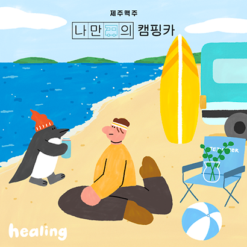

Q & A
-
신청 자격이 어떻게 되나요?
맥주를 마실 수 있는 20세 이상 성인 누구나 신청 가능합니다.
단! 여행자 분들 중 운전자는 캠핑카 운전을 능숙하게 하실 수 있는 만 26세 이상, 운전 면허 취득 3년 이상이어야 합니다.운전자가 음주 운전으로 인한 면허 취소 및 정지 등 운전 면허에 하자가 있는 경우 신청이 불가하며, 당첨 시 취소됩니다.
-
당첨자 선정은 언제, 어떤식으로 하나요?
당첨자는 무작위 추첨 방식으로 선정되며,
발표는 매주 월요일, 전화 또는 문자로 개별적으로 연락드릴 예정입니다.
미당첨자 분들께는 별도 연락을 드리지 않는 점 양해 부탁드립니다. -
당첨 확률을 높일 수 있는 팁이 있나요?
-
나만의 캠핑카를 타고 여행을 떠나고 싶은 친구 또는 가족에게 공유하고 모두 함께 신청해보세요.
(내가 당첨이 안되더라도, 나와 함께 신청한 친구 또는 가족이 당첨되면 함께 여행을 떠날 수 있어요.) - 내가 만든 여행 일러스트를 SNS에 공유하고, 관심있는 친구들이 함께 신청하면 당첨 확률이 높아 질 수 있어요!
-
나만의 캠핑카는 매주 당첨자를 선정하며, 미당첨 시에는 중복으로 매주 신청이 가능합니다.
(기 당첨자는 중복 당첨 제외)
-
나만의 캠핑카를 타고 여행을 떠나고 싶은 친구 또는 가족에게 공유하고 모두 함께 신청해보세요.
-
몇 명까지 떠날 수 있나요?
나만의 캠핑카는 4인승 차량으로, 4인 이상 탑승이 불가합니다. -
반려 동물 동반이 가능한가요?
반려 동물은 가능하오나, 이동 시 전용 케이지에 탑승 부탁드립니다.
캠핑장 이용 시 반려 동물의 출입 가능 여부 사전 확인 부탁드립니다. -
캠핑 용품은 준비되어있나요?
기본적인 캠핑 용품(테이블, 의자, 불명 화로, 바베큐 화로, 조리도구, 랜턴, 토치 등)이 구비되어 있습니다.
불멍, 바베큐 시 필요한 장작 또는 숯과 가스는 직접 준비해주셔야 합니다. -
여행지는 가이드대로만 방문해야하나요?
여행지는 제주맥주가 추천만 드리는 것으로, 꼭 해당 여행지를 방문하시지 않아도 됩니다.
캠핑카 차박이 가능한 곳인지 확인하셔서, 가고자 하시는 여행지를 자유롭게 선택해주세요.
출발 차고지 위치는 경기도 파주시 운정역 근처입니다.
